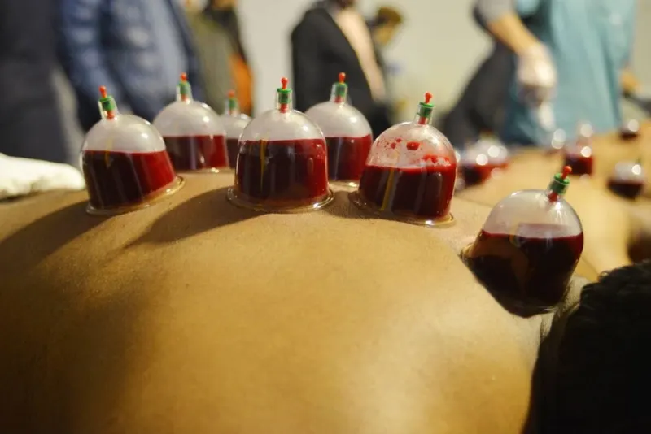

Sister Aisha Mejri
Lead hijama practitioner · 20+ years
Leads all female sessions in a female-only environment, manages the clinic's hygiene standards and is usually the first person new clients speak to about suitability.
Insured wet cupping for men and women in South London. Every session starts with a proper consultation and ends with written aftercare — single-use sterile equipment, always, and no medical promises we can't keep.


The treatment
Wet cupping — hijama in Arabic — uses gentle suction cups on the skin, followed by very small superficial openings made with a sterile single-use blade. It is a traditional practice of the Prophet Muhammad ﷺ, and clients book it as a complementary therapy alongside, never instead of, medical care.
Your visit
Nothing happens without your understanding first. First visits run a little longer so we can take your health history properly.
Health history, medications, goals and privacy preferences — plus honest answers about whether hijama suits you today.
Cups are applied with light suction for a few minutes. It feels like a strong, deep pull — we check in and adjust as we go.
Very small superficial openings with a sterile single-use blade, then cups are briefly reapplied. Most clients describe a pinprick, not pain.
The area is cleaned and covered, you rest for a few minutes, and you leave with written aftercare for the next 48 hours.
Who treats you
Same-sex sessions are the default here, not a special request.
Lead hijama practitioner · 20+ years
Leads all female sessions in a female-only environment, manages the clinic's hygiene standards and is usually the first person new clients speak to about suitability.
Senior hijama practitioner · 20+ years
Leads male-only appointments in a respectful, private setting, with the same consultation-first approach and hygiene standards used clinic-wide.
You undress only as far as cup placement needs, the room locks, and modesty is respected from consultation to dressing.
In their words
“Sister Aisha is amazing cupping therapist, she is the best I had a cupping session with.”
“The room was clean with a lock on the door. I found it to be a relaxing experience.”
“The whole process was painless and highly professional.”
100+ verified public reviews — 86 on Fresha, 24 on Google. Quotes shown unedited.
Local to you
The clinic sits on Streatham High Road, an easy journey from these neighbourhoods. Each area page has directions and answers for local clients.
Many clients book for the 17th, 19th and 21st of the lunar month, following the reported practice of the Prophet Muhammad ﷺ (Jami at-Tirmidhi 2051). Tell us when you book and we'll help you check the upcoming dates — and if you can't make one, hijama remains beneficial on any day.
Guides
Plain-English answers, written by the clinic — no hype, no medical claims.
Exactly what happens from the moment you arrive to the aftercare you take home — so nothing on the day is a surprise.
How we arrange same-sex practitioners, private rooms and modesty throughout — and what to tell us when you book.
Washing, exercise, food and healing times — plus the few warning signs that deserve a phone call.
Quick answers
Six of the questions we hear most. The full list — including suitability questions about pregnancy, blood thinners and diabetes — is on the treatment page.
Hijama is a traditional therapy in which suction cups are applied to specific points on the body — usually the back and shoulders. After a few minutes the cups are lifted, very small superficial openings are made in the skin with a sterile single-use blade, and the cups are reapplied briefly to draw a small amount of blood, which is captured in disposable cups and disposed of safely. It is one of the practices of the Prophet Muhammad ﷺ, and we deliver it as a complementary therapy in a clean, insured clinic — never as a replacement for medical care.
Most clients call the sensation unusual rather than painful. The suction feels like a strong, deep pull — similar to a firm massage — and the superficial openings feel like a brief pinprick lasting a second or two. Any soreness afterwards is like mild post-exercise tenderness and normally settles within 24 to 48 hours. Your practitioner checks in throughout and adjusts the suction to your comfort.
Plan for 60 to 75 minutes: a short consultation, around 20 to 30 minutes of cup time, wound care, and a few minutes of rest before you leave. First visits run slightly longer because we take your health history and explain every step before any cups are placed.
Yes. Female clients can request Sister Aisha in a female-only environment, and male clients are seen by Brother Abu Layla. Modesty and privacy are protected throughout — just mention your preference when you book so we schedule the right practitioner and room setup.
The Prophet Muhammad ﷺ is reported to have practised cupping on the 17th, 19th and 21st of the lunar month (narrated by Anas ibn Malik, Jami at-Tirmidhi 2051), and many clients like to book on those dates — especially when they fall on a Monday, Tuesday or Thursday. We are happy to check the upcoming dates with you. If you cannot make one, hijama remains beneficial on any day; the timing is a recommended Sunnah, not a requirement.
We are at 330 Streatham High Rd, London SW16 6HH — easy to reach from across South London. Book online on Fresha, message us on WhatsApp, or call 07552 540000. Open every day, 10:00–19:00.
Book online in about two minutes, or message us first if you want to check suitability.